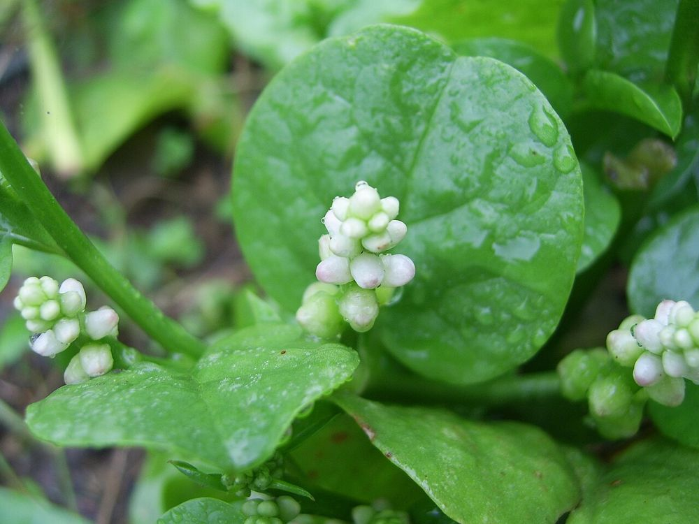

🥬 பசலைக்கீரை – உங்களுக்குத் தெரியுமா?
1கொடியாகப் படரும் கீரை
மற்ற கீரைகள் போல் தரையில் வளராமல், பந்தலில் கொடியாகப் படர்ந்து வளரும் தனித்துவமான கீரை இது.
2இயற்கை மை தரும் பழம்
இதன் கரும் ஊதா நிறப் பழங்களின் சாறு, பண்டைய காலத்தில் மையாகவும் இயற்கை உணவு நிறமியாகவும் பயன்பட்டது.
3வெயிலை விரும்பும் கீரை
கோடை வெப்பத்திலும் செழித்து வளர்வதால், "கோடைக் கீரை" என்று அழைக்கப்படுகிறது. இதன் வழவழப்புத் தன்மையே இதன் சிறப்பு.
🌿 சித்த மருத்துவக் குறிப்பு:
பசலைக்கீரையைக் கூட்டு அல்லது பொரியலாக வாரம் இருமுறை உண்டால் உடல் சூடு தணிந்து மலச்சிக்கல் நீங்கும் என்பது சித்தர் மரபு. (சிறுநீரகக் கல் உள்ளவர்கள் அளவோடு உண்ணவும்.)
இந்தத் தகவல் பயனுள்ளதாக இருந்ததா?